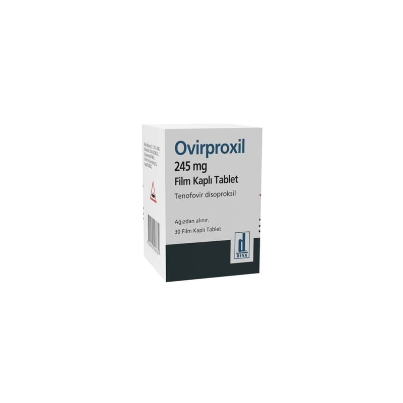

Ovirproxil 245 mg Film Kaplı Tablet, 30 Adet

Ne için kullanılır
KT · Bölüm 1OVĠRPROXĠL 245 mg film tablet, mavi renkli, oval, bikonveks film tablet Ģeklindedir. OVĠRPROXĠL 245 mg film tablet, 30 tablet içeren ĢiĢelerde tedarik edilmektedir.
OVĠRPROXĠL, bir hepatit B virüsü (HBV) enfeksiyonu olan kronik hepatit B’yi tedavi etmek için de kullanılır. Tabletler: YetiĢkinler, 12 yaĢından büyük 18 yaĢından küçük adolesanlarda kullanım için uygundur.
OVĠRPROXĠL, ayrıca Ġnsan Ġmmün Yetmezlik Virüsü (HIV) enfeksiyonuna yönelik bir tedavidir. Tabletler: 18 yaĢından büyük yetiĢkinler Direnç geliĢtirme nedeniyle artık tamamen etkili olmayan veya yan etkilere yol açan diğer HIV ilaçlarıyla daha önce tedavi edilmiĢ 12 yaĢından büyük 18 yaĢından küçük adolesanlarda kullanım için uygundur.
Hepatit B virüsü (HBV) açısından OVĠRPROXĠL'le tedavi edilmek için HIV enfeksiyonunuzun olması gerekmez.
OVĠRPROXĠL, etkin madde tenofovir disoproksil içerir. Bu etkin madde, hepatit B virüsünü veya HIV ya da her ikisini tedavi etmek için kullanılan antiviral veya antiretroviral bir ilaçtır. Tenofovir, genellikle NRTI olarak bilinen bir nükleotid revers transkriptaz inhibitörüdür ve virüslerin kendilerini yeniden üretmesi için esas olan enzimlerin (hepatit B'de DNA polimeraz, HIV'de revers transkriptaz;) normal çalıĢmasını engelleyerek çalıĢır. HIV'de, OVĠRPROXĠL, HIV enfeksiyonunu tedavi etmek için her zaman diğer ilaçlarla kombine halde kullanılmalıdır.
Bu ilaç, HIV enfeksiyonunun çaresi değildir. OVĠRPROXĠL'i alırken, yine HIV enfeksiyonu ile iliĢkili enfeksiyonlar veya baĢka hastalıklar geliĢtirebilir.
Ayrıca baĢkalarına da HIV veya HBV bulaĢtırabilirsiniz; dolayısıyla, baĢkalarını enfekte etmekten kaçınmak için önlemler alınması önemlidir.